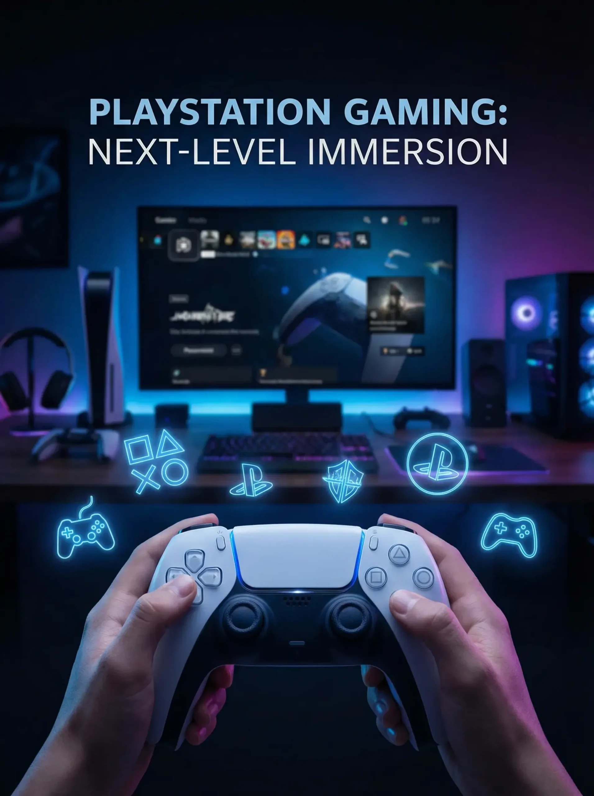

PENGALAMAN GAMING

Bermain game merupakan salah satu bentuk hiburan yang dapat dilakukan untuk mengisi waktu luang. Agar pengalaman bermain lebih menyenangkan, pengunjung perlu memperhatikan beberapa hal. Pertama, pilih permainan yang sesuai dengan minat. Kedua, gunakan waktu bermain secara bijak. Ketiga, pastikan posisi duduk nyaman selama bermain. Selain itu, menjaga perangkat gaming dan menggunakan controller dengan baik juga merupakan bagian dari pengalaman bermain yang menyenangkan. RepGamingHouse berupaya menyediakan lingkungan bermain yang nyaman bagi seluruh pengunjung.